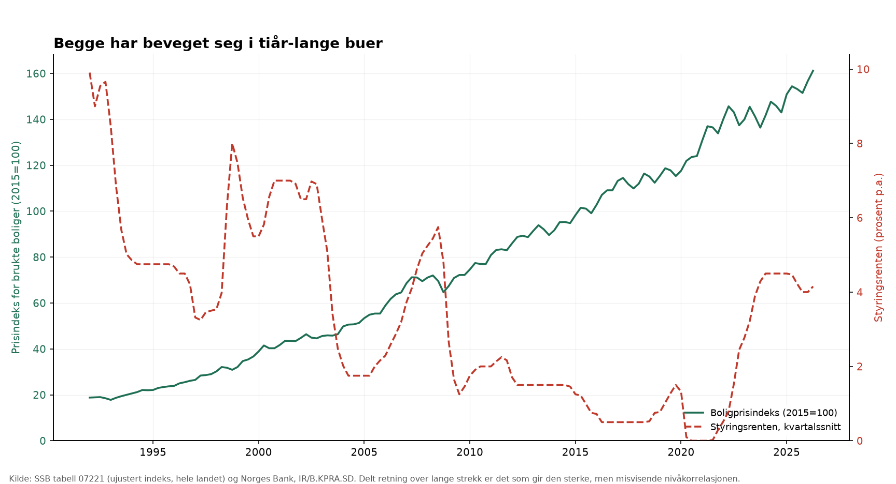
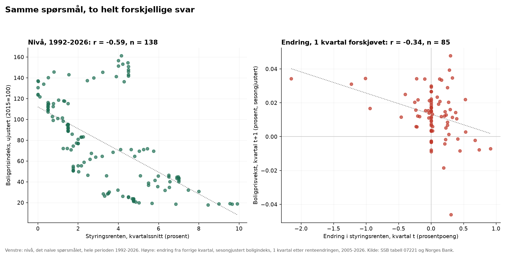

Rente og bolig · Norges Bank og SSB tabell 07221
Renta og boligprisene: nivået lyver, den forsinkede endringen holder stikk
Styringsrenten mot boligprisindeksen samme kvartal ser ut som en sterk sammenheng: r = -0,59 over 138 kvartal siden 1992. Det er nesten bare delt, tiår-lang trend. Ser man i stedet på hvordan boligprisveksten endrer seg etter at renta endres, blir sammenhengen svakere — men den forsvinner ikke: r = -0,34 med 1 kvartals forsinkelse (n = 85, p 0,001).
Funn
- Målt på nivå — styringsrenten og boligprisindeksen samme kvartal, hele perioden 1992-2026 — er korrelasjonen r = -0,59 (n = 138 kvartal, p < 0,001). Det ser overbevisende ut, og det er nettopp problemet: renta har falt fra ni-ti prosent til null over disse tiårene mens boligprisene har mangedoblet seg, og to serier som deler én lang retning korrelerer sterkt på nivå uansett hvor mye de faktisk henger sammen fra kvartal til kvartal.
- Målt på endring — hvor mye endrer boligprisveksten (sesongjustert) seg etter at renta endres, 1 kvartal senere — er korrelasjonen r = -0,34 (n = 85 kvartal, 2005-2026, p 0,001). Svakere enn nivåtallet, som forventet når den delte trenden er fjernet, men i motsetning til Preben-sakene forsvinner den ikke: den er moderat, i forventet retning, og statistisk signifikant på vanlig nivå.
- Retningen er den man skulle vente: en renteøkning henger sammen med lavere boligprisvekst kvartalet(-ene) etter, ikke samme kvartal. Se «Følsomhet» for hvor fort sammenhengen dør ut med lengre forskyvning, og «Metode» for hvorfor det fortsatt ikke beviser at renta er årsaken.


Følsomhet
- Tabellen under gjentar endringstallet over med andre forskyvninger — ikke fordi noen av dem er en bedre hypotese, men for å se om sammenhengen er robust eller bare var den forskyvningen som tilfeldigvis ga høyest tall.
- Mønsteret er som forventet fra hvordan pengepolitikk faktisk virker: sammenhengen er svakest samme kvartal, sterkest ved én til to kvartals forsinkelse, og avtar mot null etter fire-fem kvartal. Det er ikke tilfeldig støy uten struktur, slik forskyvningstabellen i Preben-sakene var — det er en form som ligner en reell, forsinket transmisjon.
- Sammenhengen ved 1-2 kvartals forskyvning holder seg også — svekket til r ≈ -0,29 til -0,32, fortsatt signifikant — om koronakvartalene 2020-2021 tas helt ut av utvalget. Den er altså ikke bare ett enkelt sjokk som drar tallet.
| Forskyvning | Antall kvartal | r | p |
|---|---|---|---|
| 0 (samme kvartal) | 85 | -0,03 | 0,776 |
| 1 kvartal | 85 | -0,34 | 0,001 |
| 2 kvartal | 84 | -0,34 | 0,001 |
| 3 kvartal | 83 | -0,27 | 0,013 |
| 4 kvartal | 82 | -0,17 | 0,125 |
| 6 kvartal | 80 | -0,06 | 0,615 |
| 8 kvartal | 78 | -0,09 | 0,431 |
0 kvartal = renteendring og boligprisvekst samme kvartal. Alle tall er fra den sesongjusterte perioden, 2005-2026.
Metode
- Rentetall: Norges Bank, dataserie IR/B.KPRA.SD (styringsrenten), hentet 2026-08-04T00:34:53Z, sha256 53f9dffe7773….
- Boligtall: SSB tabell 07221, «07221: Prisindeks for brukte boliger, etter region, boligtype og kvartal». Oppdatert 2026-07-10, hentet 2026-08-04T00:34:54Z, sha256 ef9bdc3dd343….
- Styringsrenten er notert per virkedag og regnet om til kvartalssnitt her; boligprisindeksen er allerede kvartalsvis fra SSB. Endringstallet bruker den sesongjusterte indeksvarianten, som først finnes fra 2005K1 — elleve år kortere enn rentetallet, og grunnen til at endringsanalysen dekker et kortere tidsrom enn nivågrafen.
- Modellene
mart.rente_kvartal,mart.boligpris_kvartalogmart.rente_bolig_kvartal, bygget av statman 2026-08-04 00:34:54Z. - Verken p-verdien eller forskyvningsmønsteret over beviser at styringsrenten forårsaker endringen i boligprisveksten. Norges Bank setter renten blant annet ut fra egne vurderinger av boligmarkedet og presset i økonomien for øvrig, så noe av sammenhengen kan gå motsatt vei eller gjennom en tredje faktor — inflasjon, kronekurs, kredittpraksis i bankene, boligbygging. To tidsserier kan ikke skille en slik forklaring fra en direkte effekt; det krever en modell med flere variabler, som denne saken ikke bygger.
- Landstallet skjuler dessuten store regionale forskjeller — Oslo har for eksempel beveget seg annerledes enn resten av landet i flere av disse rentesyklusene. Det er utenfor denne saken, men et åpent spørsmål for en senere en.
Forbehold
Det som må stå ved siden av tallene for at de skal kunne forsvares. Hentet fra metrikkatalogen, ikke skrevet på nytt her.
Styringsrenten, kvartalssnitt prosent p.a., snitt av virkedagsnoteringer i kvartalet
Kilde: Norges Bank, dataserie IR/B.KPRA.SD (styringsrenten)
- Kvartalssnitt av virkedagsnoteringer ved dagens slutt, ikke et snitt av kalenderdager. Renten er identisk hver dag mellom rentemøtene, så snittet flytter seg bare når Norges Bank faktisk endrer den.
- Styringsrenten er ikke en variabel som beveger seg uavhengig av boligmarkedet den sammenlignes med her. Norges Bank setter renten blant annet ut fra egne vurderinger av presset i boligmarkedet, så en sammenheng kan gå begge veier.
Prisindeks for brukte boliger, hele landet indeks, 2015=100
Kilde: SSB tabell 07221, «Prisindeks for brukte boliger, etter boligtype og region»
- Landsgjennomsnitt for alle boligtyper samlet. Skjuler betydelige regionale forskjeller — samme tabell hos SSB har indeksen brutt ned på elleve regioner, som denne saken ikke bruker.
- Ikke sesongjustert. Brukes bare til nivåbildet over hele perioden 1992-2026; endringstallet under bruker den sesongjusterte varianten, som ikke finnes like langt tilbake.
Prisindeks for brukte boliger, sesongjustert indeks, 2015=100, sesongjustert
Kilde: SSB tabell 07221, «Prisindeks for brukte boliger, etter boligtype og region»
- Finnes bare fra 2005K1, elleve år kortere enn styringsrenteserien. Endringsanalysen dekker derfor 2005-2026, ikke hele perioden nivåtallet viser.
- SSBs egen sesongjustering, ikke etterprøvd eller regnet om av oss.
Endring i styringsrenten fra forrige kvartal prosentpoeng fra forrige kvartal
Kilde: Norges Bank, dataserie IR/B.KPRA.SD (styringsrenten)
- Null med mindre forrige rad faktisk er forrige kvartal, ikke bare forrige rad i tabellen — se navn_preben_endring for samme prinsipp. Det finnes ikke noe hull i denne serien i dag, men sjekken er der.
Boligprisvekst fra forrige kvartal, sesongjustert andel (0.014 = 1,4 %) fra forrige kvartal
Kilde: SSB tabell 07221, «Prisindeks for brukte boliger, etter boligtype og region»
- Regnet ut av oss fra den sesongjusterte indeksen, ikke hentet ferdig.
- Sammenlignes i denne saken med endringen i styringsrenten ett eller flere kvartal tidligere, ikke samme kvartal — se «Metode» i sakspakken for hvorfor, og «Følsomhet» for hvor mye valget av forskyvning betyr.
{kind=link}
{kind=link}